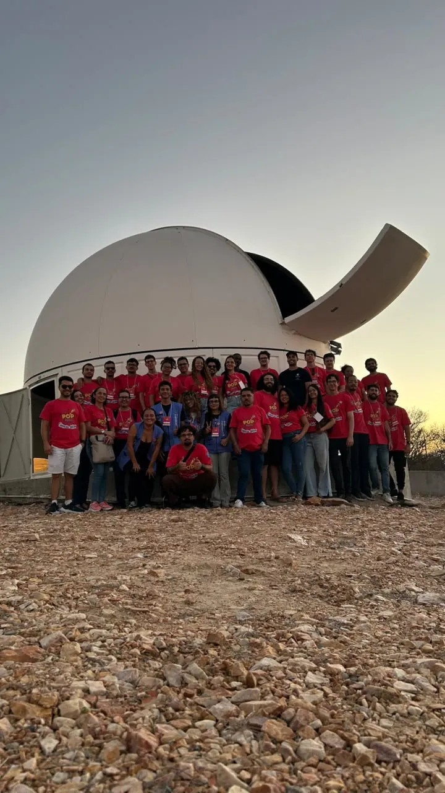

Curiosidade
Despertar perguntas e o prazer de descobrir.
Museu de Ciências · UFRPE
O Desvendando o Céu Austral transforma a curiosidade pelo céu em experiências de aprendizagem. Da extensão universitária às ações itinerantes e ao Museu de Ciências, a missão permanece: popularizar a ciência e aproximar a astronomia das pessoas.

01 · Nossa missão
Astronomia acessível, experimentação prática e participação de estudantes e comunidades.
O Desvendando o Céu Austral é uma iniciativa de extensão vinculada à Universidade Federal Rural de Pernambuco (UFRPE), dedicada à divulgação e à popularização da ciência, com ênfase em astronomia e na aproximação entre universidade, escolas e sociedade.
Os registros públicos consultados mostram que, em 2014, o projeto já promovia mostras na universidade, ações com o PIBID-Física e o Espaço Ciência, encontros com escolas, teatro científico, exposições, palestras e oficinas de telescópios. Esse recorte não define necessariamente o ano formal de criação; indica o início da linha do tempo documental apresentada aqui.
Com o tempo, a atuação se ampliou para ações itinerantes, observações públicas, construção de foguetes educativos, visitas técnicas, eventos científicos e atividades em cidades do interior. Docentes, estudantes, licenciandos, monitores e instituições parceiras ajudam a adaptar cada atividade ao público, ao espaço e às condições locais.
A inauguração do Museu de Ciências em maio de 2026 marca uma nova etapa dessa caminhada: além das ações externas e das parcerias, o projeto passou a contar com um espaço de visitação e mediação científica na UFRPE. O Museu não apaga a história anterior — oferece uma nova base para receber públicos, apresentar o acervo e apoiar novas atividades.
A programação, os horários de visitação e a disponibilidade de cada atividade devem ser confirmados com a equipe do Museu. Esta página apresenta a trajetória com base em registros públicos, distinguindo fatos documentados de propostas gerais de divulgação.
Uma construção coletiva: a atuação acadêmica do professor Antônio Carlos da Silva Miranda e a contribuição de colaboradores, entre eles Samyr Pessoa da Silva, fazem parte dessa história. O arquivo do projeto registra Samyr em palestra sobre astrobiologia e teatro científico em 2017. A contribuição de cada pessoa deve ser descrita conforme os registros disponíveis, sem atribuir cargos ou responsabilidades não documentados.
Consultar o arquivo histórico do projeto ↗ Registro de 2017 ↗


Despertar perguntas e o prazer de descobrir.
Conectar conceitos científicos a experiências reais.
Criar espaços de troca, inclusão e pertencimento.
Aproximar estudantes e licenciandos da mediação científica.
02 · Uma trajetória em movimento
Um caminho construído por mostras, oficinas, ações itinerantes, cooperação com observatórios e presença pública. Os marcos abaixo têm links para as fontes consultadas.
MAI. 2014
Um dos primeiros registros públicos consultados documenta a IV Mostra de Astronomia na UFRPE, com participação do PIBID-Física e do Espaço Ciência. A programação reuniu estudantes e professores de diferentes escolas, a peça “O julgamento de Galileu”, palestras, exposições explicativas e oficinas com telescópios. A mostra também buscava incentivar a participação na Olimpíada Brasileira de Astronomia (OBA). A marca desse formato é fazer ciência por meio da experiência, da conversa e da participação cultural.
Relato da IV Mostra · arquivo histórico ↗SET. 2014
Registros do projeto descrevem ações em Serra Talhada e no IFPE de Belo Jardim. O formato incluía conversas sobre astronomia, experimentos, construção e lançamento de foguetes e observação do céu. A itinerância ampliou o alcance da extensão: em vez de esperar que o público chegasse à universidade, a equipe passou a levar experiências científicas a outras cidades e comunidades.
Registro de atividade em Serra Talhada ↗2015
Programações abertas ao público na Torre Malakoff incluíram observação da Lua, de Júpiter e de constelações, além de conversas sobre meteoros, cometas e asteroides. A presença em espaços culturais aproximou a astronomia de pessoas que talvez não participassem de uma atividade universitária formal.
Secretaria de Cultura de Pernambuco ↗2017
Na III Semana de Popularização da Ciência no Semiárido, em Monteiro (PB), o arquivo do projeto registra palestra de Samyr Pessoa da Silva sobre astrobiologia e sua participação em teatro científico. O registro ajuda a documentar a dimensão colaborativa e artística das ações de divulgação, sem reduzir a trajetória do projeto a uma única pessoa.
Arquivo histórico do projeto ↗2021
O Observatório Astronômico do Sertão de Itaparica passou a aparecer com mais destaque na trajetória documentada. Registros do Observatório Nacional indicam a participação de visitantes em ações de divulgação no OASI durante a Semana Nacional de Ciência e Tecnologia, aproximando educação básica, universidade e infraestrutura de pesquisa.
Registro do Observatório Nacional · 2021 ↗2022
Na programação de portas abertas, o observatório e parceiros promoveram atividades de divulgação, com observação e contato com a astronomia. A visita técnica registrada em maio também ajudou a conectar estudantes e professores com a instrumentação do observatório, o trabalho científico e as possibilidades de formação.
OASI de portas abertas · 2022 ↗2023
O projeto integrou uma ação pública de observação do céu com telescópios, aproximando estudantes, servidores e visitantes da astronomia em parceria com a Comissão de Ciência e Tecnologia da Assembleia Legislativa de Pernambuco.
Registro da ALEPE ↗MAR. 2026
Uma dissertação de mestrado da UFRPE estudou o uso de motion graphics no ensino de Física e incluiu um estudo de caso ligado ao Desvendando. Como produto aplicado, foi desenvolvido um vídeo para o projeto, com linguagem visual voltada à aprendizagem e conteúdo científico validado. Esse registro apresenta uma nova frente: materiais digitais que podem complementar oficinas, visitas e mediações presenciais.
Registro acadêmico da UFRPE · 2026 ↗18 MAI. 2026
O projeto ganhou um espaço de visitação no térreo do Cegen, na UFRPE. A inauguração foi anunciada com ações de observação solar, foguetes educativos e atividades de divulgação científica. O museu representa uma nova etapa de presença física e acolhimento de públicos — não o início da história, que já era marcada pela extensão e pela atuação itinerante.
Notícia institucional da UFRPE ↗27–29 MAI. 2026
Em Itacuruba, a Semana de Popularização da Ciência no Semiárido reuniu UFRPE, Observatório Nacional, INSA e parceiros locais. A equipe do Desvendando contribuiu com dinâmicas interativas em uma programação ligada à ciência, à cultura e ao futuro do Semiárido. É um exemplo da continuidade entre extensão universitária, território e pesquisa.
Notícia institucional da UFRPE ↗03 · Aprender fazendo
As ações são organizadas pela equipe do projeto e seus monitores. O formato é adaptado à idade dos participantes, ao espaço e às condições de cada atividade.
ATIVIDADE EDUCATIVA
Com telescópios e lunetas, o público pode observar a Lua, planetas e outros alvos disponíveis no céu. Os monitores orientam o olhar, explicam o funcionamento dos instrumentos e ajudam a transformar a observação em perguntas científicas. A seleção dos objetos depende da época, do clima e das condições do céu.
ATIVIDADE EDUCATIVA
Sessões diurnas podem abordar características da nossa estrela com instrumentos e filtros apropriados. A mediação inclui segurança: nunca se deve olhar diretamente para o Sol sem equipamento adequado e corretamente instalado.
ATIVIDADE EDUCATIVA
Cartas celestes, referências do horizonte e observação a olho nu ajudam a localizar estrelas e constelações, reconhecer o Cruzeiro do Sul e compreender como o céu aparente muda ao longo do ano.
ATIVIDADE EDUCATIVA
Oficinas convidam os participantes a construir e testar foguetes educativos. A atividade pode explorar força, pressão, ação e reação, estabilidade, experimentação e comparação de resultados, com adaptações à idade e à estrutura disponível.
ATIVIDADE EDUCATIVA
Figurinos, personagens e encenação aproximam o público de temas científicos com humor e imaginação. O teatro ajuda a acolher perguntas, quebrar a formalidade e abordar a história da ciência com públicos de diferentes idades.
ATIVIDADE EDUCATIVA
Rodas de histórias conectam planetas, estrelas, exploração espacial e narrativas culturais. A conversa cria pontes entre imaginação, cultura e conhecimento científico, mantendo clara a diferença entre narrativas culturais e explicações construídas pela ciência.
ATIVIDADE EDUCATIVA
Encontros sobre Sistema Solar, astrobiologia, meteoros, cometas, história da astronomia em Pernambuco e temas atuais. O conteúdo é ajustado à faixa etária, ao nível da turma e ao contexto de cada comunidade.
ATIVIDADE EDUCATIVA
Modelos, materiais didáticos e pequenas experiências permitem investigar fenômenos por meio da observação e da construção. A proposta é que o visitante participe, teste ideias e converse sobre o que percebeu, em vez de apenas assistir a uma explicação.
ATIVIDADE EDUCATIVA
No espaço do Museu, as visitas podem apresentar instrumentos, modelos e histórias que ajudam a contar como a ciência é construída. O acervo funciona como ponto de partida para atividades com escolas, famílias e visitantes, conforme a programação e a disponibilidade da equipe.
ATIVIDADE EDUCATIVA
Fotografias do céu e registros de atividades ajudam a documentar observações e compartilhar descobertas. As imagens também servem para conversar sobre poluição luminosa, condições atmosféricas, equipamentos e os limites do que se consegue observar.
ATIVIDADE EDUCATIVA
Roteiros em espaços científicos aproximam o público do patrimônio cultural e científico de Pernambuco, incluindo observatórios e pontos históricos. Visitas dependem de agendamento, disponibilidade dos locais e condições de acesso.
ATIVIDADE EDUCATIVA
O projeto leva atividades a escolas, praças e eventos públicos. O planejamento é adaptado à infraestrutura disponível e construído em diálogo com docentes, monitores e parceiros locais, para aproximar a ciência dos públicos que nem sempre conseguem visitar a universidade.
04 · Pesquisa, educação e território
O Observatório Astronômico do Sertão de Itaparica aproxima o Nordeste de pesquisas sobre pequenos corpos do Sistema Solar e abre oportunidades para ações de divulgação e formação científica.
OASI · Itacuruba, Pernambuco
O Observatório Astronômico do Sertão de Itaparica (OASI), ligado ao Observatório Nacional, é uma infraestrutura de pesquisa situada no Sertão pernambucano. Seu telescópio robótico participa de pesquisas astronômicas, incluindo observações de pequenos corpos do Sistema Solar. A pesquisa e a divulgação científica são dimensões relacionadas, mas diferentes: a primeira segue protocolos e projetos científicos; a segunda cria oportunidades para que o público conheça instrumentos, métodos e perguntas da astronomia.
Para o Desvendando, visitas técnicas e ações conjuntas constituem uma forma de aproximar estudantes, professores, monitores e pesquisadores. O contato com um observatório ajuda a mostrar que ciência não é apenas conteúdo de livro: envolve equipamentos, coleta de dados, trabalho em equipe, análise e colaboração entre instituições.
A relação com o OASI também aparece na Semana de Popularização da Ciência no Semiárido (Semana POP). Em maio de 2026, a 10ª edição foi realizada em Itacuruba, reunindo a UFRPE, o Observatório Nacional, o INSA e parceiros locais. A equipe do Desvendando participou com dinâmicas interativas, em uma programação ligada à ciência, à cultura e ao futuro do Semiárido.
05 · Cooperação e território
Universidades, observatórios, escolas, instituições públicas e comunidades ajudam a fazer a ciência circular para além dos espaços acadêmicos.
Universidade sede do projeto e do Museu. Reúne docentes, estudantes e licenciandos em ações de extensão, ensino e divulgação científica.
O observatório em Itacuruba oferece um elo entre infraestrutura de pesquisa, visitas técnicas e ações educativas. As pesquisas remotas dependem de projetos, protocolos e autorizações institucionais específicos.
A Semana de Popularização da Ciência no Semiárido articula pesquisa, educação, cultura e saberes locais em atividades com escolas e comunidades.
Registros históricos e ações públicas demonstram a importância da cooperação com instituições de divulgação científica, exposições, oficinas e iniciativas de ciência para todos.
Professores, gestores e estudantes participam de visitas, oficinas, rodas de conversa e experiências adequadas a cada comunidade escolar.
Quando articuladas para uma ação, as parcerias locais podem mobilizar escolas e público, oferecer espaço e apoio logístico e valorizar a história científica de cada município.

Memória, meteoritos e cultura local
Em Santa Filomena, a queda de meteoritos em agosto de 2020 motivou articulações entre universidade, órgãos de ciência e gestores, com propostas de preservação da memória, educação astronômica e ações para escolas e moradores.
Na região da Serra do Magé, em Alagoinha, a queda observada em 1923 é uma referência histórica local. Registros de iniciativas municipais relacionam esse patrimônio a atividades de observação, foguetes educativos e planetário móvel. A divulgação científica pode conectar pesquisa, educação, turismo, cultura e identidade local.
Transparência: esta página reúne registros públicos de atividades e cooperações. Não presume que toda iniciativa represente um convênio jurídico permanente. Da mesma forma, a menção a pesquisa remota não significa acesso automático a dados ou telescópios; cada atividade depende dos procedimentos e acordos institucionais aplicáveis.
06 · Registros do acervo
Fotografias locais do acervo do projeto: oficinas, observação, monitores, experiências e encontros com o público. Toque em uma imagem para ampliá-la.
07 · Memória e transparência
A seleção abaixo permite conferir notícias institucionais, registros de eventos, arquivos históricos e publicações relacionadas à trajetória descrita nesta página.
08 · Fale com o Museu
Entre em contato para conversar sobre visitas, ações em escolas, observações astronômicas, parcerias e atividades na sua comunidade.
Professor responsável / idealizador
Contato para informações institucionais e articulação de ações.
Monitora responsável pela organização
Contato para organização, informações e encaminhamento de atividades.
Veja registros das atividades, acompanhe novidades e envie sua mensagem pelos canais oficiais do projeto.